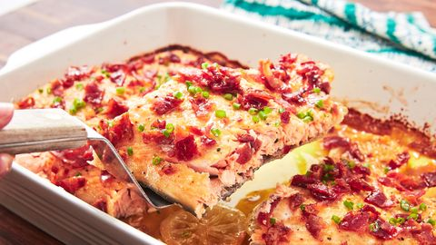

Maple bacon salmon
Recipes

Description
Feeding a crowd? This Maple Bacon Salmon is just the thing. Loaded with smoky flavor, it'll turn even the biggest fish skeptics into fans. Paired with a pitcher of spiked strawberry lemonade, you really can't go wrong.
Ingredients
For the salmon
- 1 lemon, slices
- 1 skin-on salmon fillet
- 2 1/2 teaspoons spice mix with salt, black pepper and garlic evenly
- 1 tablespoon Dijon mustard
- 1/3 cup extra-virgin olive oil
- 2 tablespoons fresh lemon juice
- 2 tablespoons maple syrup
- finely chopped chives, for garnish
For the candied bacon
- 3 tablespoons maple syrup
- 1 tablespoon packed brown sugar
- 1/4 teaspoon spice mix with salt, black pepper and garlic evenly
- 6 slices bacon
Instructions
- Make salmon: Preheat oven to 400°. Place lemon slices on bottom of 9"-x-13" baking dish and place salmon on top. Season salmon all over with 2 teaspoons McCormick Himalayan Pink Salt, Black Pepper and Garlic All-Purpose Seasoning.
- In a medium bowl, whisk together mustard, oil, lemon juice, maple syrup, and remaining 1/2 teaspoon McCormick Himalayan Pink Salt, Black Pepper and Garlic All-Purpose Seasoning. Pour sauce over salmon.
- Roast salmon until cooked through and it flakes easily with a fork, 20 to 25 minutes. Turn oven to broil and broil until golden, if desired, about 3 minutes.
- Meanwhile, make candied bacon: In a small bowl, whisk maple syrup with brown sugar and ¼ teaspoon of McCormick Himalayan Pink Salt, Black Pepper and Garlic All-Purpose Seasoning. In a large skillet over medium heat, cook bacon until lightly golden on both sides, about 4 minutes per side. Drain bacon fat.
- Return skillet to medium heat and pour maple syrup mixture into pan. Add bacon and cook, turning slices frequently until liquid is almost absorbed and bacon is glazed, 3 to 4 minutes.
- Using tongs, carefully transfer bacon to a work surface to cool completely. Crumble bacon and sprinkle with chives over cooked salmon before serving.